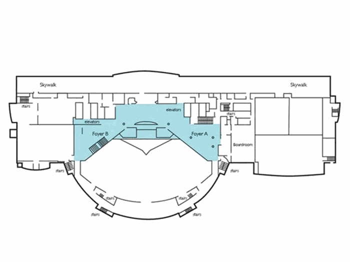

Day 1 · Friday, October 23
Amphitheater B, InterContinental Hotel Cleveland Clinic
Level 3 amphitheater of the InterContinental Hotel & Bank of America Conference Center. Breakfast from 6:30 AM.
Open in Google Maps